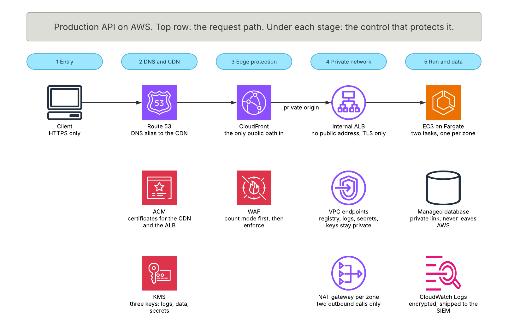
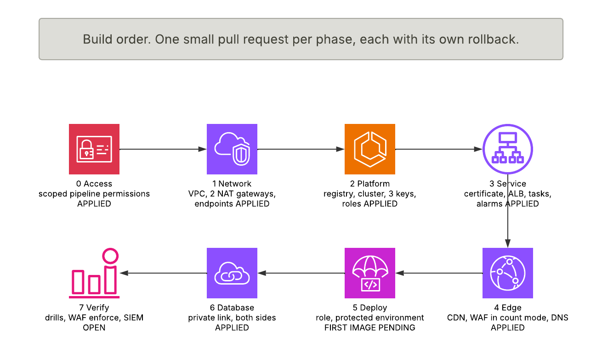
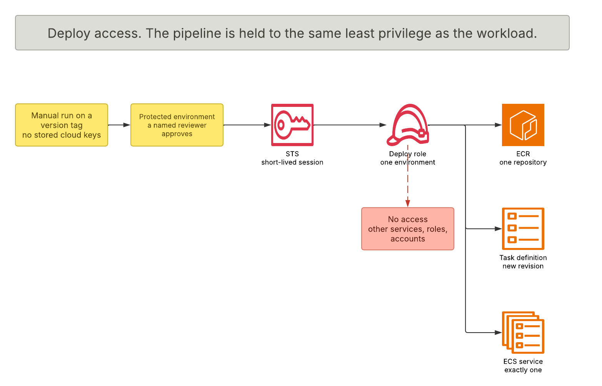
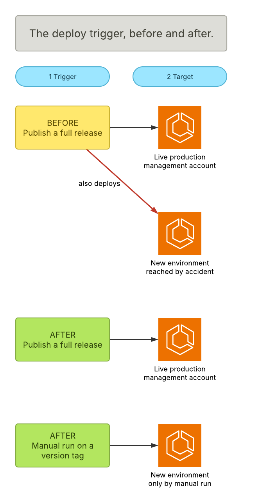
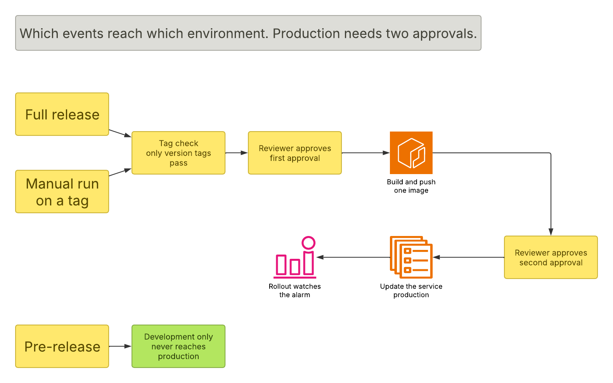
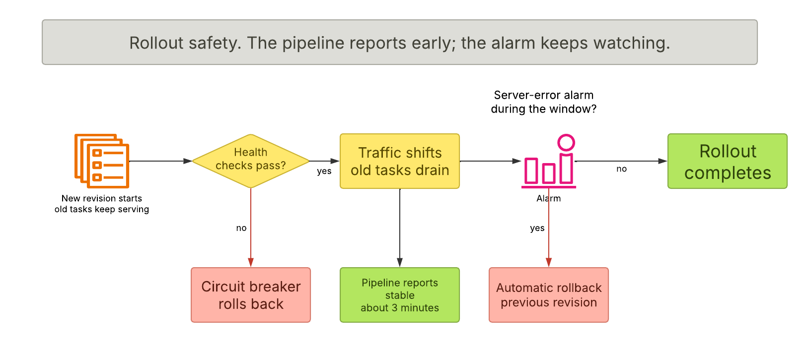
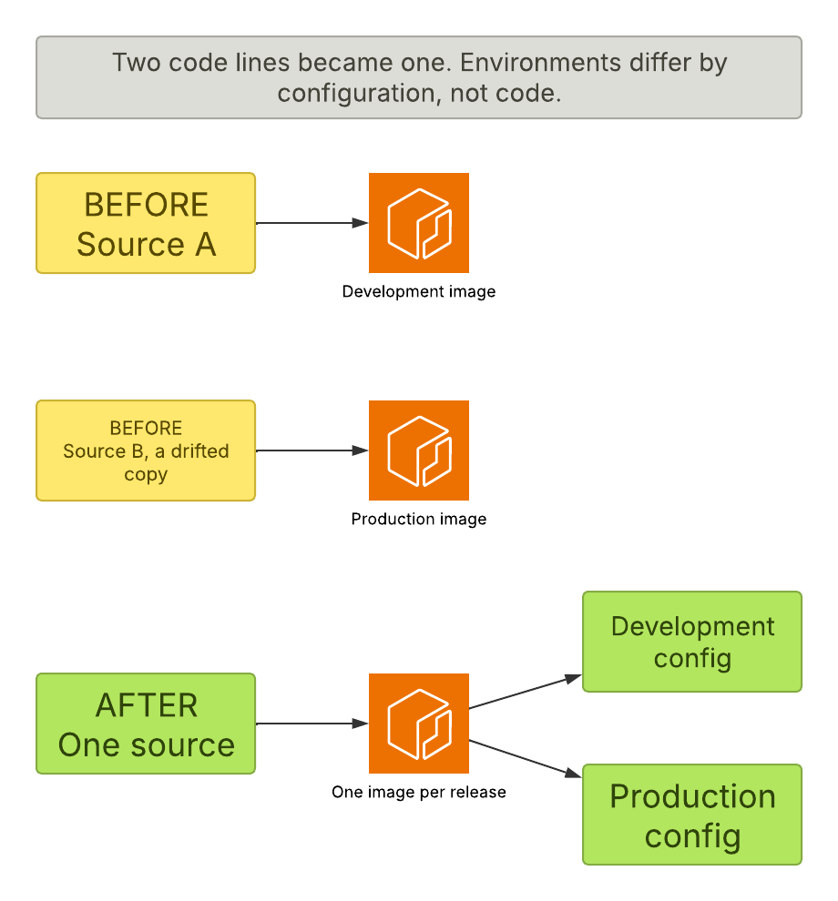
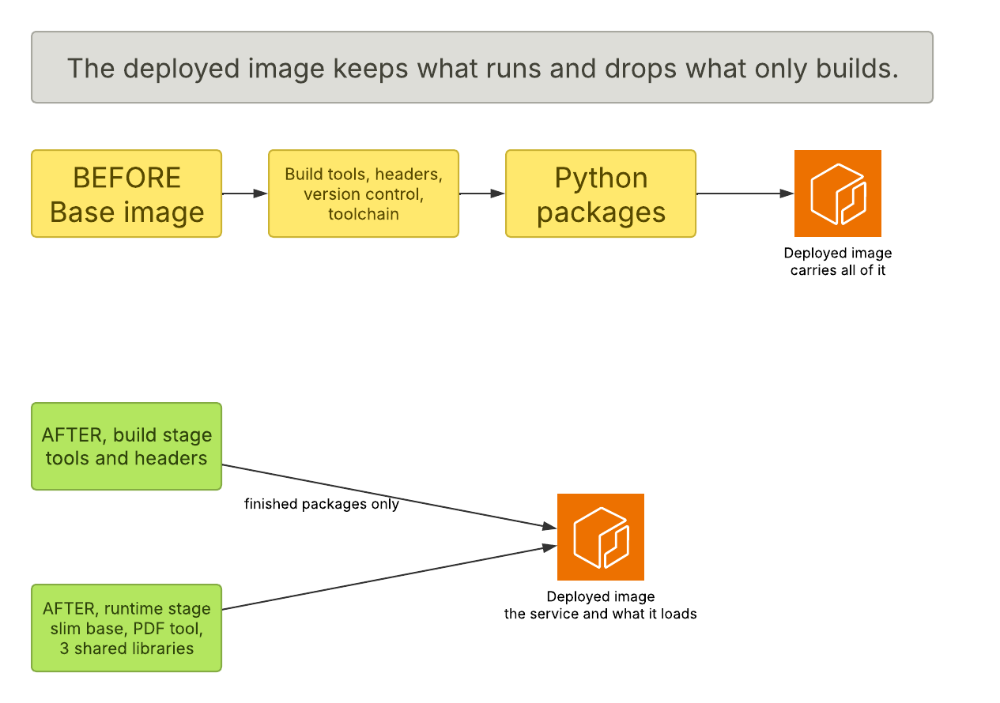
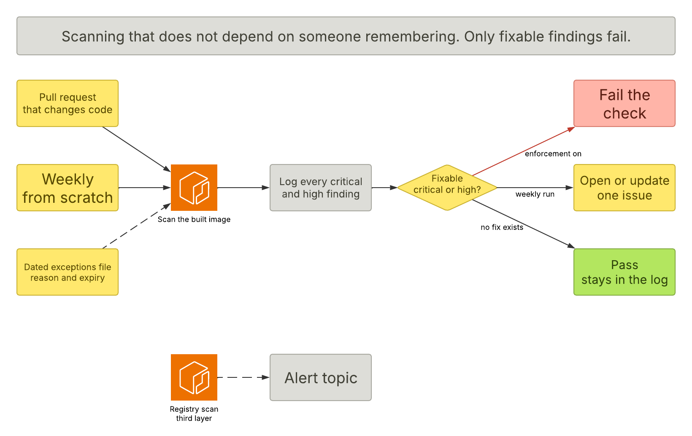

Platform and DevOps engineering · work record
What my job covers, and a worked example: building a hardened production environment for a customer-facing API on AWS, phase by phase, entirely as code. Identifiers, account numbers, hostnames, names and secrets are left out.
I own the cloud infrastructure for a legal-services company, across several AWS accounts (development, production, a management account, and smaller workload accounts). Everything I change goes through code, review and a pipeline. The work falls into four kinds.
| Kind of work | What it looks like |
|---|---|
| Bring existing cloud into code | Imported the development, production and management accounts into Terraform network by network (5, 4 and 7 VPCs), so nothing is managed by hand. Also imported a security workloads account, including its VPN. |
| Build new environments | Designed and built new services from scratch, copying what worked in development and hardening it for production. |
| Migrate and retire | Moved an eight-stack pipeline to the CDK. Decommissioned a retired storage stack and cleaned up what it left behind. |
| Standards and access | Least-privilege roles for the pipelines themselves, identity pools and groups for applications, ticket hygiene, and written plans for each project. |
A customer-facing API that handles sensitive personal data ran in the management account, with gaps: no TLS to the load balancer, no web firewall, fixed capacity, secrets baked into the image, and nothing under Terraform. I built a replacement in the production account, ready and idle, so moving traffic later is a separate and low-risk project.
The only public path is a CDN with a web firewall. It reaches an internal load balancer through a private origin, so the load balancer has no public address. Tasks run in private subnets and reach AWS services through private endpoints.

One design assumption could not be read from the docs: that the CDN reaches the internal load balancer without any DNS record for the origin. I tested it. The load balancer answered through the CDN, so the extra record, and its exposure, were never needed.
Each phase was one small pull request with its own rollback. I checked the apply log after every merge, so a failure showed up in minutes, not later.

| Phase | What I built | State |
|---|---|---|
| 0 Access | Scoped permissions for the pipeline, limited to this project's resource names | applied |
| 1 Network | Dedicated network, two NAT gateways, gateway and interface endpoints | applied |
| 2 Platform | Image registry, cluster, three encryption keys, task roles, security groups, flow logs | applied |
| 3 Service | Certificate, internal load balancer, task definition, service, alarms and a notification topic | applied |
| 4 Edge | CDN with a private origin, web firewall in count mode, public certificate, DNS alias | applied |
| 5 Deploy | Deploy role and protected environment; manual deploy workflow | first image pending |
| 6 Database | Private link to the database, accepted on both sides; secret created by hand | applied |
| 7 Verify | Failure drills, firewall enforcement, alarm routing, log shipping to the SIEM | open |
| Decision | Reasoning |
|---|---|
| Right-sized the network | The first proposal reserved about 2,000 addresses. I cut it to a /23 (512), since subnets can grow later by adding a second range. Smaller means cheaper to plan around. |
| One NAT gateway per zone | The development environment had one and called it a single point of failure. Production gets one per zone, and each private subnet uses its own. |
| Private endpoints for AWS services | Image pulls, logs, secrets, keys and tokens stay off the NAT. That cuts per-GB cost and keeps those calls private. |
| Its own encryption keys | The production service gets its own field-encryption key instead of depending on a key in another account. One re-wrap step remains for the cutover project. |
| No cost center tag | None exists, so I left it out instead of inventing one, and flagged the tags that must be activated for cost reports. |
| Firewall in count mode first | Watch real traffic, then enforce. Blocking on day one risks blocking legitimate users. |
| Deploys never share a trigger with live | See the access section: I found that one release would also have deployed to live production and separated them. |
The pipeline is held to the same least-privilege standard as the workload. The deploy role can be assumed only by a job in one protected environment, which needs a named reviewer, and only from a version tag.


I noticed that publishing a release to ship the new environment would also have redeployed live production. I moved the new path to its own manual workflow, so the two cannot be triggered together by accident.
| What went wrong | What I did |
|---|---|
| Permissions granted to the pipeline's own role cannot apply through the pipeline | Apply those grants by hand, with a targeted apply, before merging the change that needs them. Two phases partly failed when the order slipped; both recovered cleanly. |
| A permissions policy was over the size cap | Split it into two managed policies and kept names pinned to the project. |
| Tagging some resources needed permissions the pipeline lacked | Left security-group rules untagged, and added the one missing tag permission for CDN origins. |
| Retiring a stack stalled on a main route table that cannot be deleted on its own | Removed the dependents first, dropped it from state, then re-applied, verifying after each step. |
| A DNS validation record was entered with a doubled name | Corrected it and removed the stray record. Learned that expired validation records break certificate renewal. |
| A hosted zone that predated the project could have been shadowed by a delegation | Did not delegate it. Used an alias record instead and listed the old zone for cleanup. |
| A merge conflict in the plan document | Traced it to timing, not content, then replaced the stale branch with a fresh change from the main branch. |
The sections above describe the build as it stood part-way through. This section is the completion record. The environment is now finished: the service runs two tasks across both zones, serves traffic through the CDN, the firewall enforces, and a normal release deploys to it. It still takes no live traffic, by design. What remains is verification and the cutover project.
Earlier I had separated the new environment from live production with a manual workflow. Once live deploys were retired, I let a published release drive the new environment too, keeping the same guard: a named reviewer approves each job, and only version tags may deploy. Pre-releases stay on the development path and never reach production.

The service rolls out with a circuit breaker and an alarm-based rollback: if the load balancer starts returning server errors, ECS reverts to the previous revision on its own. That alarm window made the pipeline wait about nine minutes after a deploy that was already healthy. I changed the pipeline step to report as soon as the new revision is the only one serving and the running count matches, which cut the wait to about three minutes, and the alarm keeps watching afterwards.

The repository carried two copies of the service: the one built for development and a separate older copy that built production. They had drifted: different ports, different settings, routes in one that the other did not have. Production now builds from the same source as development, with one Dockerfile whose settings come from the environment, so the only difference between environments is configuration.

I split this into separate, reviewable changes: rename the build stage to say what it is, delete the workflow that auto-updated pull requests, and then delete the duplicate copy with every workflow, build target, dependency-bot entry and document that pointed at it. Six dependency-bot pull requests aimed at the deleted copy were closed, and the bot's failing run, caused by a private workflow repository it could not read, was fixed by ignoring that one dependency.
| Decision | Reasoning |
|---|---|
| Retire the live deploy path before cutover | Keeping the old copy alive only to hotfix the old service meant maintaining two code lines. I flagged the consequence plainly: the old service keeps running its current image but cannot be redeployed from the repository until cutover. A hotfix path from the single source remains available if it is ever needed. |
| Release drives deploy, behind approval | Engineers already ship by publishing a release. Tying the new environment to that, with a reviewer gate, is the habit-compatible and auditable choice. |
| Report stable early, keep the alarm | Waiting for the alarm window is pure latency; the rollback protection does not depend on the pipeline waiting. |
| Keep the old environment's secrets until cutover | They are the only record of the live service's names and cannot be read back once deleted. They go in one cleanup after cutover. |
| What went wrong | What I did |
|---|---|
| The first manual deploy failed its own tag check | That was the guard working: it ran from the main branch. I re-ran it from a tag. The guard stays. |
| A release tag was pushed to the wrong repository because the shell's working folder had reset | Deleted the remote and local tag straight away, before any workflow could use it, then re-ran from the right folder with a command that checks the remote. |
| The disabled docs returned 405 instead of the expected 404 | A catch-all route for preflight requests answers first. Same effect for a caller, so I fixed the code comment to say so, not the behaviour. |
| Local tests showed 162 errors | All came from a bundled binary built for the wrong CPU type on my laptop. The other 7,065 passed, and CI is the source of truth. Not a code fault. |
| A change to the repository's own docs reached the plan after it had already merged | Same pattern as before: replaced the stale branch with a fresh change from the main branch instead of merging around it. |
| Item | State |
|---|---|
| Network, platform, service, edge, database link, deploy role | done |
| Autoscaling, firewall enforcing, docs closed, release deploy | done |
| Authenticated request that reads the database | to confirm |
| Failure drills, rate-limit test, alarm delivery | to confirm |
| Alarm subscriptions, SIEM log shipping, cost-allocation tags | open |
| Cutover: re-wrap the data key, move traffic, remove the old secrets and environment | separate project |
After the environment was finished, I spent a day on the two things that would otherwise keep costing the team time: a container image full of scanner findings, and a build pipeline that made every change wait several minutes. I also proved the new release path end to end: a normal release was published, a reviewer approved it, and the service rolled to the new image, healthy, with no manual step.
The scanner's first report listed over a hundred findings. I traced where they came from instead of chasing each one. Most were not in the application at all: the runtime image still carried compilers, development headers, a version-control tool and a language toolchain that were only needed to build the Python packages. One bundled Java library inside the PDF tool accounted for the critical ones, and the code paths it flags (certificate, messaging and key-file parsing) are never reached, because the service only fills fixed templates.

The change built and passed the full test suite in CI, then I deployed it to development for the developers to test before anything reaches production. It stays unmerged until they confirm it.
Nothing in the repository scanned the image; the only scan ran after a push to the registry. I designed three layers and built the first two as one reviewable change.

| Change | What I found | Result |
|---|---|---|
| Skip the image build and tests when nothing under the application changed | A required check ran an eight-minute build for pipeline-only and doc-only changes, which cannot affect the image. A required check that does not run blocks the merge, so I kept the job and skipped only its steps. | merged |
| Report dev deploys when stable | The dev service watches an alarm during rollouts, so the pipeline waited for the whole alarm window after the service was healthy. Same fix already used for production. | merged |
| Run tests in parallel | The first parallel run aborted: one parametrized test took its inputs from an unordered set, so workers collected different tests. I fixed the test, confirmed the serial and parallel runs gave identical results locally, then measured in CI: about 3m53s down to 2m59s. Modest, because the slowest tests are PDF fills that each start a Java process. | in review |
| Next target, not started | The 25 slowest tests are all PDF fills of the same few forms. Reusing a filled PDF across tests that use the same input is the larger saving; it needs a test-by-test check that each still proves what it claims. | proposed |
| Decision | Reasoning |
|---|---|
| Remove packages before triaging findings | Ranking a hundred findings is slow and never finishes. Removing what should not be in the image clears most of them and shrinks the image too. |
| Test on development before production | The image change touches how the service starts. A team test costs a day; a bad production image costs more. |
| Measure before optimising | I read step timings and the slowest-test list before changing anything, and reported the modest gain as it was rather than as a win. |
| Never block on the unfixable | A gate that fails on findings with no fix gets ignored. Gating only on fixable findings keeps it credible. |
| Item | State |
|---|---|
| Release deploy proven end to end, dev and pipeline speed-ups | done |
| Slim runtime image | with developers in dev |
| Scan workflow and parallel tests | in review |
| Turn on enforcement once a scan of the slim image is clean | after merge |
| Bundled Java library, registry-scan alerts, reuse of filled PDFs in tests | next |
All identifiers, account numbers, hostnames, resource names, people and secrets were removed or generalised. Counts reflect work completed to date. Diagrams use AWS Architecture Icons.